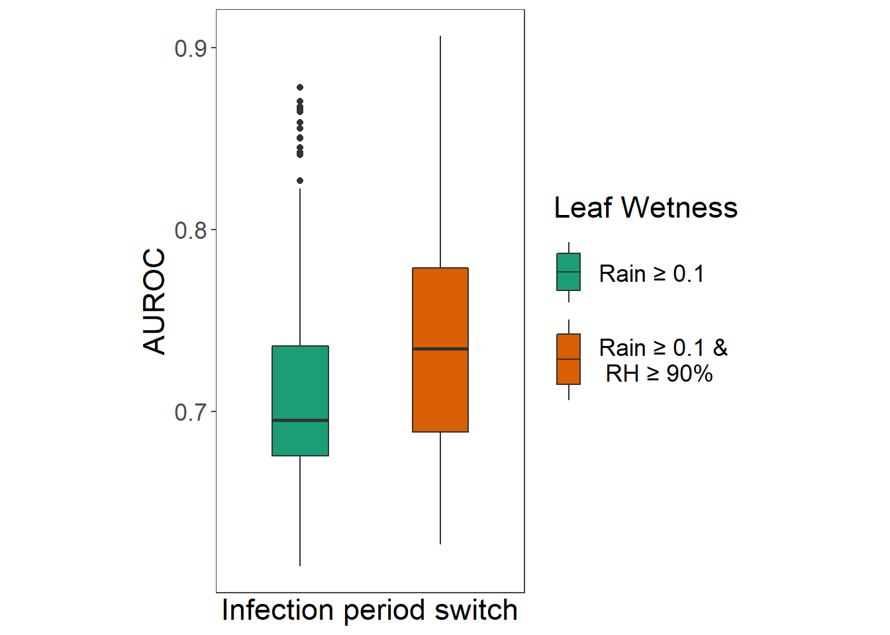

Evaluation of Irish Rules model
Introduction
Libraries
Packages needed for the analysis are loaded. If the libraries do not exist locally, they will be downloaded.
list.of.packages <-
c(
"tidyverse",
"readxl",
"data.table",
"knitr",
"zoo",
"imputeTS",
"padr",
"devtools",
"pracma",
"remotes",
"parallel",
"pbapply",
"ggrepel",
"ggthemes",
"egg",
"rsm",
"GGally",
"R.utils",
"rcompanion",
"mgsub",
"here",
"stringr",
"pander"
)
new.packages <-
list.of.packages[!(list.of.packages %in% installed.packages()[, "Package"])]
#Download packages that are not already present
if (length(new.packages))
install.packages(new.packages)
if ("gt" %in% installed.packages() == FALSE)
remotes::install_github("rstudio/gt")
list.of.packages <- c(list.of.packages, "gt")
packages_load <-
lapply(list.of.packages, require, character.only = TRUE)
#Print warning if there is a problem with installing/loading some of packages
if (any(as.numeric(packages_load) == 0)) {
warning(paste("Package/s", paste(list.of.packages[packages_load != TRUE]), "not loaded!"))
} else {
print("All packages were successfully loaded.")
}## [1] "All packages were successfully loaded."rm(list.of.packages, new.packages, packages_load)Reproducibility
Outputs of computational exhaustive procedures have been stored with the data and can be loaded directly.
Data
Weather Data
Historical weather data from Met Éireann synoptic weather station at Oak Park was used for model evaluation. The trial sites were in the radius of up to 500 m from the station in all years.
#Weather data, parameters and cut off dates
load(file = here("data", "op_2007_16", "OP_2007-2016.RData"))
OP[1:5, 1:20] %>% gt()| date | short_date | year | month | day | i_rain | rain | i_temp | temp | i_wetb | wetb | dewpt | vappr | i_rhum | rhum | msl | i_wdsp | wdsp | i_wddir | wddir |
|---|---|---|---|---|---|---|---|---|---|---|---|---|---|---|---|---|---|---|---|
| 2007-01-01 00:00:00 | 2007-01-01 | 2007 | 1 | 1 | 0 | 0.2 | 0 | 4.8 | 0 | 4.1 | 3.0 | 7.6 | 0 | 87 | 1006.9 | 2 | 11 | 2 | 250 |
| 2007-01-01 01:00:00 | 2007-01-01 | 2007 | 1 | 1 | 0 | 0.0 | 0 | 5.4 | 0 | 4.4 | 3.0 | 7.6 | 0 | 84 | 1007.6 | 2 | 7 | 2 | 240 |
| 2007-01-01 02:00:00 | 2007-01-01 | 2007 | 1 | 1 | 0 | 0.0 | 0 | 5.8 | 0 | 4.7 | 3.2 | 7.7 | 0 | 83 | 1008.4 | 2 | 6 | 2 | 250 |
| 2007-01-01 03:00:00 | 2007-01-01 | 2007 | 1 | 1 | 0 | 0.1 | 0 | 5.2 | 0 | 4.3 | 2.8 | 7.5 | 0 | 84 | 1009.7 | 2 | 15 | 2 | 260 |
| 2007-01-01 04:00:00 | 2007-01-01 | 2007 | 1 | 1 | 0 | 0.0 | 0 | 5.6 | 0 | 4.2 | 2.3 | 7.2 | 0 | 79 | 1010.9 | 2 | 15 | 2 | 260 |
Additional variables needed for the analysis.
colnames(OP)[which(names(OP) == "year")] <- "year_var"
OP <-
add_column(OP, week_var = data.table::week(OP$date), .before = "i_rain")
OP <-
add_column(OP, doy = data.table::yday(OP$date), .before = "i_rain")Subset the data to exclude the months of the year which we do not need for the analysis.
OP <- subset(OP, month > 3 & month < 10)Remove the variables we don’t need for the analysis, to make some speed gains.
Get a summary of missing values for the variables of interest.
OP %>% group_by(year_var) %>%
summarize(
NA_rain = sum(is.na(rain)),
NA_temp = sum(is.na(temp)),
NA_rhum = sum(is.na(rhum))
)Missing value imputation with qbic spline function works well up to 8 consecutive values, for variables that have some seasonal frequency, temperature and relative humidity in our case.
infil_gap <- 8 #Maximum length of the infill gap
OP$temp <-
round(na.spline(OP$temp, na.rm = FALSE, maxgap = infil_gap), 1)
OP$rhum <-
round(na.spline(OP$rhum, na.rm = FALSE, maxgap = infil_gap), 0)
OP$rhum <- sapply(OP$rhum, function(x)
ifelse(x > 100, x <- 100, x))
#Check if the imputation worked
OP %>% group_by(year_var) %>%
summarize(
NA_rain = sum(is.na(rain)),
NA_temp = sum(is.na(temp)),
NA_rhum = sum(is.na(rhum))
)Rain is somewhat harder to impute but there are ways around this problem, especially when there are only a few values missing. Since rain data is required only in certain rare situations for the model to run, defined within the model, we can use the same conditions to impute missing values outside of that range. We are certain that rain is irrelevant if relative humidity is below 88 % and temperature of 8 C, and these values can then be replaced with 0. Tis way we will know if rain data is missing in areas of interest.
OP[is.na(OP$rain), ]$rain <-
with(OP[is.na(OP$rain), ], ifelse(rhum < 88 | temp < 8, 0, rain))
OP %>% group_by(year_var) %>%
summarize(
NA_rain = sum(is.na(rain)),
NA_temp = sum(is.na(temp)),
NA_rhum = sum(is.na(rhum))
)We have no missing values and it is safe to proceed.
Bio data
Planting date and first observation of the disease are loaded. Emergence takes up to 3 weeks under Irish conditions. Period when healthy host present from emergence until 14 days prior to a first observation of the disease in the field. Warning period 10-day ‘warning period’ considered to last from -14 days to – 4 days prior to disease observed in the field. The 4-day period was assumed to be a minimum time needed from incubation period, for establishment of visible disease symptoms in the field.
#Get subsets of data for period before the epidemics were initiated
dates_cut <-
read_csv(
here("data", "op_2007_16", "plantingdates.csv"),
col_types = cols(
disease_observed = col_date(format = "%d/%m/%Y"),
last_assessment = col_date(format = "%d/%m/%Y")
)
)
dates_cut$planting_date <-
as.Date(dates_cut$planting_date, format = "%d/%m/%Y")
dates_cut$emergence <- as.Date(dates_cut$planting_date) + 21
#st warnning period to 14 days before disease onset
dates_cut <- add_column(dates_cut, disease_onset = as.Date(dates_cut$disease_observed) - 4,
.before = "disease_observed")
dates_cut <- add_column(dates_cut, warning = as.Date(dates_cut$disease_onset) - 10, .before = "disease_onset" )
rownames(dates_cut) <- NULL
dates_cut %>% rename_all(. %>% capitalize() %>% gsub("_", " ", .))The Model
Implementation of the model
IrishRulesModel <- function(weather,
param = NULL,
infill_gap = NULL) {
# wetness requirement prior to infection accumulation start
# time window of 6 hours, 3 before/after sporulation ends
wet_before <- 3
wet_after <- 3
# Parameter list
if (is.null(param)) {
rh_thresh <- 90
temp_thresh <- 10
hours <- 12 #sum of hours before EBH accumulation
} else {
#pass a vector of parameters
rh_thresh <- as.numeric(param[2])
temp_thresh <- as.numeric(param[3])
hours <- as.numeric(param[4])
lw_rhum <-
param[5] #if is NA then only rain data will be used
}
#threshold for estimation of leaf wetness using relative humidity
lw_rhum_threshold <- 90
weather[["rain"]] -> rain
if ("rhum" %in% names(weather)) {
weather[["rhum"]] -> rh
}
if ("rh" %in% names(weather)) {
weather[["rh"]] -> rh
}
weather[["temp"]] -> temp
# This function to infil missing values to let the model run
#If maximum infill gap is not provided it is defaulted to 7
if (is.null(infill_gap)) {
infill_gap <- 7
}
if (sum(is.na(with(weather, rain, temp, rhum))) > 0) {
temp <-
round(zoo::na.spline(temp, na.rm = FALSE, maxgap = infill_gap), 1)
rh <-
round(zoo::na.spline(rh, na.rm = FALSE, maxgap = infill_gap), 0)
rh <- sapply(rh, function(x) ifelse(x > 100, x <- 100, x))
}
if (sum(is.na(with(weather, rain, temp, rhum))) > 0) {
stop(print("The sum of NAs is more than 7! Check your weather data."))
}
#"Out of boounds"
rain <- c(rain, rep(0, 20))
temp <- c(temp, rep(0, 20))
rh <- c(rh, rep(0, 20))
# conditions for sporulation
criteria <- as.numeric(temp >= temp_thresh & rh >= rh_thresh)
#cumulative sum of hours that meet the criteria for sporulatoion with restart at zero
criteria_sum <-
stats::ave(criteria, cumsum(criteria == 0), FUN = cumsum)
#Initiate risk accumulation vector
risk <- rep(0, length(temp))
criteria_met12 <-
as.numeric(criteria_sum >= hours) #accumulation of EBH starts after sporulation
idx <- which(criteria_sum == hours)
#If there are no accumulations return vector with zeros
if (sum(criteria_sum == hours) == 0) {
#breaks the loop if there is no initial accumulation of 12 hours
head(risk, -20)
} else{
for (j in 1:length(idx)) {
#switch that looks if there was wetness: first rain, then both rain and rh, if rh exists
if (if (lw_rhum=="rain") {
#if only rain
(sum(rain[(idx[j] - wet_before):(idx[j] + wet_after)]) >= 0.1) #just see rain sum
} else{
any((any(rh[(idx[j] - wet_before):(idx[j] + wet_after)] >= lw_rhum_threshold)) |
#take both as possible switches
(sum(rain[(idx[j] - wet_before):(idx[j] + wet_after)]) >= 0.1))
})
# outputs true or false
{
n <- idx[j] #start accumulation from 12th hour
} else {
n <- idx[j] + 4 #start accumulation from 16th hour
}
s <- criteria_met12[n]
# if a break of less than or equal to 5 hours
m <- n - 1
while (s == 1)
{
risk[n] <- risk[m] + 1
n <- n + 1
m <- n - 1
s <- criteria[n]
if (s == 0 && (criteria[n + 2] == 1)) {
n = n + 2
s = 1
} else if (s == 0 && (criteria[n + 3] == 1)) {
n = n + 3
s = 1
} else if (s == 0 && (criteria[n + 4] == 1)) {
n = n + 4
s = 1
} else if (s == 0 && (criteria[n + 5] == 1)) {
n = n + 5
s = 1
}
}
}
head(risk, -20) #remove last 20 values that were added to vectors to prevent "Out of bounds" issue
}
}The Analysis
The set of the most important variables of Irish rules model is evaluated. The Excel sheet with parameters under evaluation is available in data folder and can be changed and used for model evaluation in other locations. Column named 90_10_12_rain represents set of the original model parameters.
#read in parameters
parameters <-
read_excel(here("data", "op_2007_16", "par.xlsx"), sheet = "par")
parameters %>% kable() %>% kableExtra::kable_styling(latex_options = "striped",full_width = FALSE)| rh_thresh | temp_thresh | hours | lw_rh |
|---|---|---|---|
| 93 | 13 | 15 | rain |
| 92 | 12 | 14 | rainrh |
| 91 | 11 | 13 | NA |
| 90 | 10 | 12 | NA |
| 89 | 9 | 11 | NA |
| 88 | 8 | 10 | NA |
| 87 | 7 | 9 | NA |
params <- expand.grid(parameters[, 1:3])
#set the leaf wetness threshold to NA, meaning only rain is considered as an estimator for leaf wetness, as in original model
params$lw_rh <- "rain"
#Repeat all of the analysis considering rh >= 90% and rain as an estimator of leaf wetness
params2 <- params
params2$lw_rh <- as.character("rainrh")
parameters <- bind_rows(params, params2)
rm(params, params2)
# set a column with a name for each model
parameters <- add_column(parameters, model = NA, .before = 1)
for (i in seq_along(1:nrow(parameters))) {
parameters[i, 1] <-
paste0(parameters[i, 2:length(names(parameters))], collapse = "_")
}
str(parameters)## 'data.frame': 686 obs. of 5 variables:
## $ model : chr "93_13_15_rain" "92_13_15_rain" "91_13_15_rain" "90_13_15_rain" ...
## $ rh_thresh : num 93 92 91 90 89 88 87 93 92 91 ...
## $ temp_thresh: num 13 13 13 13 13 13 13 12 12 12 ...
## $ hours : num 15 15 15 15 15 15 15 15 15 15 ...
## $ lw_rh : chr "rain" "rain" "rain" "rain" ...Model Run
The model has been run with each set of parameters, and columns with model outputs are attached to weather data frame. Names of new columns correspond to the set of parameters supplied.
# This chunk is not run
for(i in 1:nrow(parameters)) {
loop_var <- apply(parameters[i, ], 1, function(x) {
#run the model with different parameters
k <-
lapply(split(OP, factor(OP$year)), function(chunk)
IrishRulesModel(chunk, x)) #get the list of outputs
unlist(k) -> k #make it a vector
})
OP[, ncol(OP) + 1] <- as.numeric(loop_var)
rm(loop_var)
names(OP)[ncol(OP)] <- paste0(parameters[i, 1])
print(paste(i, "of", nrow(parameters)))
}
nn <- paste0(names(OP[, 26:length(names(OP))]), "_ebh", "")
setnames(OP, old = c(names(OP[, 26:length(names(OP))])), new = nn)
rm( nn)Instead, just load the output from a prior model run to save time.
load(file = here("data", "op_2007_16", "OP_for_analysis.RData"))
# Sample of outputs
head(OP[, c(1, 7, 9, 15, 24:30)], 5)Evaluation procedure
The function SensParametersCalc calculates Sensitivity and Specificity of each variation of the model.
SensParametersCalc <-
function(y,
weather_data,
dates_cut,
prot_duration = NULL) {
#Set the warning threshold and run the rest of the script
warning_threshold <- y
#data
fun_df <- weather_data
#A function to subset the data for the period of interest in each year
test.overlap = function(vals, start_date, end_date) {
rowSums(mapply(function(a, b)
between(vals, a, b),
start_date, end_date)) > 0
}
#Subset each year from emergence to disease onset and calculate number of FP and TN
fptn_df <-
fun_df %>%
#Subset the of the data for the duration of non-warning period for each year
filter(test.overlap(short_date, dates_cut$emergence, dates_cut$warning)) %>%
select(
ends_with("year_var"),
ends_with("week_var"),
ends_with("doy"),
ends_with("_ebh")
) %>%
group_by(year_var) %>%
#if there was an accumulation from previous day, it would triger a warning
#Check all of the first five rows because of possible break of 5 hours
mutate_at(., .vars = colnames(.[grep("ebh", colnames(.))]),
funs(
ifelse(row_number() <= 5 & . >= warning_threshold,
warning_threshold, .)
)) %>%
#all five values all changed so we have to delete 4 of them and leave only 1
mutate_at(., .vars = colnames(.[grep("ebh", colnames(.))]),
funs(ifelse(
row_number() <= 4 & . == warning_threshold, 0, .
))) %>%
# Change values coresponding to the warning threshold to 1 for calculating the sum
mutate_at(., .vars = colnames(.[grep("ebh", colnames(.))]),
funs(ifelse(. == warning_threshold, 1, 0))) %>%
group_by(year_var, week_var, doy) %>%
summarise_at(., .vars = colnames(.[grep("ebh", colnames(.))]), .funs = sum)
#Each warning would cause treatment that will keep the plants protected for a period of time
prot_duration <-
ifelse(is.null(prot_duration), 7, prot_duration)#If not defined default value is 7 days
TreatmentWindow <- function(x, prot_duration) {
# don't leave commented code. Use or remove
# x <- fptn_df[["93_10_12_rain_ebh"]]
y <-
vector(mode = "numeric", length = length(x) + prot_duration)
for (i in seq_along(x)) {
if (x[i] == 1) {
y[i:c(i + prot_duration)] <- 1
}
}
y
}
fptn_df[grep("ebh", colnames(fptn_df))] <-
lapply(fptn_df[grep("ebh", colnames(fptn_df))], function(x)
TreatmentWindow(x, prot_duration))
FP <-
summarise_all(fptn_df[, colnames(fptn_df[, grep("ebh", colnames(fptn_df))])], .funs = sum)
#Each warning will cause a treatment
total_days <-
nrow(fptn_df) #total duration of non_warning period
TN <- total_days - FP
##########################################################
#subset for 10 days prior to disease onset: Warning period
tpfn_df <-
fun_df %>%
#Subset of the data for the duration WARNING period in each year
filter(test.overlap(short_date, dates_cut$warning, dates_cut$disease_onset)) %>%
select(
ends_with("year_var"),
ends_with("week_var"),
ends_with("doy"),
ends_with("_ebh")
) %>%
mutate_at(., .vars = colnames(.[grep("ebh", colnames(.))]),
funs(
ifelse(row_number() <= 5 &
. >= warning_threshold, warning_threshold, .)
)) %>%
#all five values is changed so we have to delete 4 of them and leave only one
mutate_at(., .vars = colnames(.[grep("ebh", colnames(.))]),
funs(ifelse(
row_number() <= 4 & . == warning_threshold,
0, .
))) %>%
mutate_at(., .vars = colnames(.[grep("ebh", colnames(.))]),
funs(ifelse(. == warning_threshold, 1, 0))) %>%
group_by(year_var) %>%
summarise_at(., .vars = colnames(.[, c(4:length(colnames(.)))]) , .funs = sum) %>%
mutate_at(., #some years have two warnings during the warning period
.vars = colnames(.[grep("ebh", colnames(.))]), funs(ifelse(. >= 1 , 1, 0)))
# tpfn_df[,1:4]
TP <-
summarise_all(tpfn_df[, colnames(tpfn_df[, grep("ebh", colnames(tpfn_df))])], .funs = sum)
#number of outbreaks(in this case there is only one location, so number of outbreaks is same as number of years.
unique(tpfn_df$year_var) %>%
length() -> no_of_outbreaks
FN <- no_of_outbreaks - TP
#summary
test <- data.frame(
model = names(FP),
FP = t(FP[1,]),
tn = t(TN[1,]),
TP = t(TP[1,]),
FN = t(FN[1,])
)
names(test) <- c("model", "FP", "TN", "TP", "FN")
test <- data.frame(test, row.names = NULL)
test$model <- str_replace(test$model, "_ebh", "")
test$sens <- with(test, TP / (TP + FN)) #PTP sensitivity
test$spec <- with(test, TN / (TN + FP)) #PTN specificity
return_df <- test[, c("model", "sens")]
return_df$"one_min_spec" <- 1 - test[, "spec"]
return_df$cut_point <- warning_threshold
return(return_df)
}This function was applied to output of each variation of the model with varying warning threshold from 1 to 18 EBH. The function is run with parallel processing support because it reduces the run time to 4 minutes with 4 cores i7(7th generation) and 12GB RAM laptop.
# this chunk not evaluated
#select max warning threshold
warning_thresholds <- 1:18
begin <- Sys.time()
#Detect the number of cores and set it to total minus 1, if there are multiple cores, to avoid overload
cores <- ifelse(detectCores() > 1, detectCores()-1, 1)
cl <- makeCluster(cores)
clusterExport(cl, c("OP", "dates_cut", "SensParametersCalc"))
clusterEvalQ(cl, library("tidyverse"))
ROC <- pbapply::pblapply(warning_thresholds, function(x)
{
xx <- SensParametersCalc(x,OP, dates_cut, prot_duration = 7)
return(xx)
},
cl = cl
)
begin- Sys.time() #check the duration of the process in the console
stopCluster(cl)Rather, the results of calculations from a prior run can be directly loaded.
load(file = here("data", "op_2007_16","results","ROC_output.Rdata"))Sort the outputs for each model variation.
ROC_data <-
as.data.frame(data.table::rbindlist(ROC))
rownames(ROC_data) <- NULL
# rm(ROC) #Outputs stored for each warning threshold/cutoffs
ROC_data <-
base::split(ROC_data, ROC_data$model) #Get the list of all model outputs with different cutoffs
ROC_data[[1]] %>% gt()| model | sens | one_min_spec | cut_point |
|---|---|---|---|
| 87_10_10_rain | 1.0 | 0.6443299 | 1 |
| 87_10_10_rain | 1.0 | 0.6005155 | 2 |
| 87_10_10_rain | 1.0 | 0.5773196 | 3 |
| 87_10_10_rain | 1.0 | 0.4484536 | 4 |
| 87_10_10_rain | 0.8 | 0.4201031 | 5 |
| 87_10_10_rain | 0.8 | 0.3891753 | 6 |
| 87_10_10_rain | 0.8 | 0.3685567 | 7 |
| 87_10_10_rain | 0.8 | 0.3556701 | 8 |
| 87_10_10_rain | 0.8 | 0.3376289 | 9 |
| 87_10_10_rain | 0.8 | 0.3247423 | 10 |
| 87_10_10_rain | 0.8 | 0.3247423 | 11 |
| 87_10_10_rain | 0.8 | 0.3015464 | 12 |
| 87_10_10_rain | 0.8 | 0.2835052 | 13 |
| 87_10_10_rain | 0.8 | 0.2628866 | 14 |
| 87_10_10_rain | 0.8 | 0.2525773 | 15 |
| 87_10_10_rain | 0.8 | 0.2319588 | 16 |
| 87_10_10_rain | 0.7 | 0.2113402 | 17 |
| 87_10_10_rain | 0.6 | 0.2113402 | 18 |
ROC
Contingency tables were created with sensitivity and specificity values from confusion matrix for each decision threshold for all model outputs from 1 to 18 EBH accumulation. Area under the curve (AUROC) was calculated using trapezoidal rule for each variation of the model outputs.
#function to calculate AUROC for list of inputs
GetAUC <- function(fun_df) {
fun_df <- fun_df[rev(order(fun_df$cut_point)), ]
auc <-
pracma::trapz(c(0, fun_df$one_min_spec, 1), c(0, fun_df$sens, 1))
result <- data.frame(model = unique(fun_df$model),
auc = auc)
return(result)
}
AUROC_data <- lapply(ROC_data, function(x)
GetAUC(x))
AUROC_data <-
lapply(AUROC_data, function(x)
mutate_if(x, is.factor, as.character))
AUROC_data <- bind_rows(AUROC_data)Empirical ROC curve was created for each variation of the model.
PlotROC <- function(df, numbering = NULL) {
df <- df[rev(df$cut_point), ]
#append rows for plotting
x <- rep(NA, ncol(df))
df <- rbind(x, df)
df[nrow(df) + 1, ] <- NA
df$model <- unique(df$model[!is.na(df$model)])
df[1, c("sens", "one_min_spec")] <- 0
df[nrow(df), c("sens", "one_min_spec")] <- 1
#Condense labels for a single cutoff point
df <-
df %>%
group_by(one_min_spec, sens, model) %>%
summarise(cut_point = ifelse(all(is.na(cut_point)),
"",
range(cut_point, na.rm = TRUE) %>%
unique() %>%
paste(collapse = "-"))) %>%
ungroup()
#find AUROC value for selected model
if("model"%in% names(AUROC_data)){
AUROC_lab <- paste("AUROC =", round(AUROC_data[AUROC_data$model == unique(df$model), ]$auc, 3))
} else { #some changes in next chnk of code made this necessary, col model will be split and removed
if(str_split(unique(df$model), "_")[[1]][4] == "rainrh"){
mod_var <- str_split(unique(df$model), "_")
mod_var[[1]][4] <- "rainrh"
implode <- function(..., sep='') {paste(..., collapse=sep)}
mod_var <- implode(mod_var[[1]],sep="_")
}else{
mod_var <- str_split(unique(df$model), "_")
implode <- function(..., sep='') {paste(..., collapse=sep)}
mod_var <- implode(mod_var[[1]],sep="_")
}
auc_val <-
unite(AUROC_data, col = model, colnames(AUROC_data[,1:4]), sep = "_") %>%
filter(model == mod_var) %>%
select(auc)
AUROC_lab <- paste("AUROC =", round(auc_val, 3))
}
#Print title without or with lettering (for later analysis)
pars <- str_split(df[1,"model"], "_")
title <-
paste0( ifelse(is.null(numbering),"", paste0(letters[numbering],") ")),
"ROC for ",
"Tt = ", pars[[1]][[2]],"°C; ",
"RHt = ", pars[[1]][1], "%; ",
"SDt = ", pars[[1]][3],
"\n",
" hours; and LW = rain > 0.1mm and RH>90%.")
ggplot(df, aes(one_min_spec, sens, label = cut_point)) +
geom_abline(
intercept = 0,
slope = 1,
color = "black",
linetype = "dashed"
) +
geom_path(colour = "gray") +
geom_point(colour = "black") +
geom_text_repel(size = 3) +
scale_y_continuous(limits = c(0, 1),
expand = c(0, 0),
breaks = c(0, 0.1, 0.25, 0.5, 0.75, 0.9, 1),
name = "Sensitivity") +
scale_x_continuous(limits = c(0, 1),
expand = c(0, 0),
breaks = c(0, 0.1, 0.25, 0.5, 0.75, 0.9, 1),
name = "1- Specificity") +
ggtitle(title) +
annotate(
"text",
x = 0.7,
y = 0.15,
label = AUROC_lab,
size = 5
) +
theme_bw() +
theme(
text = element_text(size = 10.5),
panel.grid.major = element_blank(),
panel.grid.minor = element_blank()
)
}
PlotROC(ROC_data[["90_10_12_rain"]])
Prepare the data for further analysis and check the resulting data frame.
params <- colnames(parameters[, names(parameters) != "model"])
AUROC_data <-
separate(AUROC_data, model, into = params, sep = "_")
# AUROC_data[AUROC_data$lw_rh == "r+rh", "lw_rh"] <- "rainrh"
AUROC_data[, 1:3] <-
lapply(AUROC_data[, 1:3], as.numeric)
data <- data.frame(AUROC_data)
head(data) %>% gt()| rh_thresh | temp_thresh | hours | lw_rh | auc |
|---|---|---|---|---|
| 87 | 10 | 10 | rain | 0.8064433 |
| 87 | 10 | 10 | rainrh | 0.7966495 |
| 87 | 10 | 11 | rain | 0.7680412 |
| 87 | 10 | 11 | rainrh | 0.7997423 |
| 87 | 10 | 12 | rain | 0.7128866 |
| 87 | 10 | 12 | rainrh | 0.7997423 |
Parameter evaluation
Leaf wetness estimation
Differences between pairs of models with same parameters, differing only in leaf wetness estimation. We shall consult visual aids to assess if distribution of differences follows normal distribution.
t_data <-
data %>%
group_by(rh_thresh, temp_thresh, hours) %>%
unite(var, rh_thresh, temp_thresh, hours) %>%
spread(key = lw_rh, value = auc) %>%
mutate(difference = rain - rainrh)
ggplot(t_data, aes(x = difference)) +
geom_density(fill = "royalblue",
alpha = 0.5,
color = NA) +
geom_point(aes(y = 0),
alpha = 0.5) +
geom_histogram(binwidth = 0.001) +
theme_article()Compute summary statistics by groups.
group_by(data, lw_rh) %>%
summarise(
count = n(),
median = median(auc, na.rm = TRUE),
IQR = IQR(auc, na.rm = TRUE)
) %>% gt()| lw_rh | count | median | IQR |
|---|---|---|---|
| rain | 343 | 0.6953608 | 0.06018041 |
| rainrh | 343 | 0.7345361 | 0.09027062 |
shapiro.test(t_data$difference)##
## Shapiro-Wilk normality test
##
## data: t_data$difference
## W = 0.8718, p-value = 2.877e-16The p-value < 0.05 implying that the distribution of the data is significantly different from normal distribution. Use paired-sample Wilcoxon test to determine if median AUROC with r as lw estimator is as good as the median auc with both r and rh as estimators.
w.test <- with(t_data,
wilcox.test(
rain,
rainrh,
paired = TRUE,
exact = F,
alternative = "less"
))
w.test##
## Wilcoxon signed rank test with continuity correction
##
## data: rain and rainrh
## V = 11211, p-value < 2.2e-16
## alternative hypothesis: true location shift is less than 0Wilcoxon signed rank test showed that median AUROC is greater when using both rain >0.1 mm and RH>90% instead only rain >0.1 mm and as leaf wetness indicators with p < 0.001. Model outputs with rain as single predictor are removed from further analysis.
plot <-
data %>%
mutate(Leaf_Wetness = factor(ifelse(
lw_rh == "rainrh", "rain and rh", "only rain"
))) %>%
ggplot(aes(
x = factor(lw_rh),
y = auc,
group = Leaf_Wetness
)) +
geom_boxplot(aes(colour = Leaf_Wetness), width = 0.4) +
# geom_label(aes_string(x=1.5, y=height, label=paste("p =",w.test$p.value)), label.size =0.02 )+
scale_color_discrete(name = "Leaf Wetness",
labels = c("Rain>0.01", "Rain>0.01 & RH>=90%")) +
scale_x_discrete(breaks = c(0, 90),
labels = c("rain", "rh and rain")) +
xlab("Infection period switch") +
ylab("AUROC") +
theme_article() +
coord_equal(10 / 1)
plot+ggsave(here("data", "op_2007_16","results","LWswithc.png"), width = 11, height = 11, units = "cm")
#Remove the data containg only rain as estimator
data <- subset(data, lw_rh == "rainrh")
data$lw_rh <- NULLT, RH and Sporulation duration
Initial exploration
Scatter plot matrix shows some relationships between y and other variables.
GGally::ggpairs(data,
lower = list(continuous = "points"),
upper = list(continuous = "cor"))
Increasing temperature threshold had positive, while reducing rh and duration of sporulation threshold had negative correlation with AUROC.
Take initial look at descriptive statistics and trend of AUROC response as a factor of each variable investigated.
p1 <-
data[order(data$hours), ] %>%
ggplot(., aes(factor(hours), auc)) +
geom_boxplot(width = 0.4) +
geom_jitter(
position = position_jitter(width = 0.2),
colour = "black",
alpha = 0.6,
size = 0.7
) +
ggtitle("Durations of sporulation period") +
geom_smooth(method = "loess",
se = T,
color = "red",
aes(group = 1)) +
xlab("Sporulation period (hours)") +
ylab("AUROC") +
theme_article()
p2 <-
ggplot(data, aes(factor(rh_thresh), auc)) +
geom_boxplot(width = 0.4) +
geom_jitter(
position = position_jitter(width = 0.2),
colour = "black",
alpha = 0.6,
size = 0.7
) +
ggtitle("RH thresholds for sporulation and infection") +
geom_smooth(method = "loess",
se = T,
color = "blue",
aes(group = 1)) +
ylab("AUROC") +
xlab("RH threshold (%)") +
theme_article()
p3 <-
ggplot(data, aes(factor(temp_thresh), auc)) +
geom_boxplot(width = 0.4) +
geom_jitter(
position = position_jitter(width = 0.2),
colour = "black",
alpha = 0.6,
size = 0.7
) +
ggtitle("Temperature thresholds for sporulation and infection") +
geom_smooth(
method = "loess",
se = T,
color = "black",
aes(group = 1),
show.legend = T
) +
xlab("Temperature threshold (°C)") +
ylab("AUROC") +
theme_article()
png(filename = here("data", "op_2007_16","results","init_vis.png"),
width = 400, height = 800,bg = "white", res = NA, restoreConsole = TRUE)
egg::ggarrange(p1,p2,p3, ncol = 1)
dev.off()## png
## 2p1;p2;p3


Model fitting
lapply(data[, 1:3], function(x)
sort(unique(x)))## $rh_thresh
## [1] 87 88 89 90 91 92 93
##
## $temp_thresh
## [1] 7 8 9 10 11 12 13
##
## $hours
## [1] 9 10 11 12 13 14 15Create coded data set. Seven levels of each variable are used.
cd_data <- coded.data(data, Tt ~ (temp_thresh - 10),
RHt ~ (rh_thresh - 90),
SDt ~ (hours - 12))
str(cd_data)## Classes 'coded.data' and 'data.frame': 343 obs. of 4 variables:
## $ RHt: num -3 -3 -3 -3 -3 -3 -3 -3 -3 -3 ...
## $ Tt : num 0 0 0 0 0 0 0 1 1 1 ...
## $ SDt: num -2 -1 0 1 2 3 -3 -2 -1 0 ...
## $ auc: num 0.797 0.8 0.8 0.805 0.761 ...
## - attr(*, "codings")=List of 3
## ..$ Tt :Class 'formula' language Tt ~ (temp_thresh - 10)
## .. .. ..- attr(*, ".Environment")=<environment: R_GlobalEnv>
## ..$ RHt:Class 'formula' language RHt ~ (rh_thresh - 90)
## .. .. ..- attr(*, ".Environment")=<environment: R_GlobalEnv>
## ..$ SDt:Class 'formula' language SDt ~ (hours - 12)
## .. .. ..- attr(*, ".Environment")=<environment: R_GlobalEnv>
## - attr(*, "rsdes")=List of 2
## ..$ primary: chr "Tt" "RHt" "SDt"
## ..$ call : language coded.data(data = data, Tt ~ (temp_thresh - 10), RHt ~ (rh_thresh - 90), SDt ~ (hours - 12))head(cd_data) %>% kable()| RHt | Tt | SDt | auc | |
|---|---|---|---|---|
| 2 | -3 | 0 | -2 | 0.7966495 |
| 4 | -3 | 0 | -1 | 0.7997423 |
| 6 | -3 | 0 | 0 | 0.7997423 |
| 8 | -3 | 0 | 1 | 0.8054124 |
| 10 | -3 | 0 | 2 | 0.7608247 |
| 12 | -3 | 0 | 3 | 0.6768041 |
Fit models of first to fourth order, and evaluate fits.
poly_1_fit <- lm(auc ~ poly(RHt, SDt, Tt, degree = 1), data = cd_data)
poly_2_fit <- lm(auc ~ poly(RHt, SDt, Tt, degree = 2), data = cd_data)
poly_3_fit <- lm(auc ~ poly(RHt, SDt, Tt, degree = 3), data = cd_data)
poly_4_fit <- lm(auc ~ poly(RHt, SDt, Tt, degree = 4), data = cd_data)
compareLM(poly_1_fit,poly_2_fit,poly_3_fit,poly_4_fit)[[2]] %>%
add_column( Order = 1:4, .before = 1) %>%
gt() | Order | Rank | Df.res | AIC | AICc | BIC | R.squared | Adj.R.sq | p.value | Shapiro.W | Shapiro.p |
|---|---|---|---|---|---|---|---|---|---|---|
| 1 | 4 | 339 | -1281 | -1281 | -1262 | 0.6375 | 0.6342 | 2.419e-74 | 0.9934 | 0.13760 |
| 2 | 10 | 333 | -1408 | -1407 | -1366 | 0.7581 | 0.7516 | 4.713e-97 | 0.9971 | 0.81390 |
| 3 | 20 | 323 | -1580 | -1577 | -1499 | 0.8617 | 0.8535 | 3.272e-126 | 0.9963 | 0.61070 |
| 4 | 35 | 308 | -1601 | -1593 | -1463 | 0.8811 | 0.8680 | 5.837e-122 | 0.9908 | 0.03029 |
Cubic model seems to be the best fit for our purpose. We want to get the best possible fit to the data, to understand underlying relationships between variable thresholds of our model. Hence, our priority is increase in explanatory power, for which our main guide is adjusted R2, while the distriburion of residuals is still fulfilling the assumption of normality. Model of 4th order seems to provide very little gain in terms of fit Adj. R2 comparing to 3rd order, and most importantly is not overfitting indicated by Wilks-Shapiro test for model of 4th order. Information crterions are indication high values for all fits because of structure of data set, and this information is disregarded because the model is used for interpretation of the data.
library(pander)
panderOptions('round', 2)
panderOptions('keep.trailing.zeros', TRUE)
pander(poly_3_fit,add.significance.stars = T)| Estimate | Std. Error | t value | Pr(>|t|) | ||
|---|---|---|---|---|---|
| (Intercept) | 0.74 | 0.00 | 583.67 | 0.00 | * * * |
| poly(RHt, SDt, Tt, degree = 3)1.0.0 | -0.60 | 0.02 | -25.78 | 0.00 | * * * |
| poly(RHt, SDt, Tt, degree = 3)2.0.0 | -0.22 | 0.02 | -9.57 | 0.00 | * * * |
| poly(RHt, SDt, Tt, degree = 3)3.0.0 | 0.09 | 0.02 | 3.69 | 0.00 | * * * |
| poly(RHt, SDt, Tt, degree = 3)0.1.0 | -0.60 | 0.02 | -25.39 | 0.00 | * * * |
| poly(RHt, SDt, Tt, degree = 3)1.1.0 | 2.32 | 0.43 | 5.34 | 0.00 | * * * |
| poly(RHt, SDt, Tt, degree = 3)2.1.0 | 2.37 | 0.43 | 5.46 | 0.00 | * * * |
| poly(RHt, SDt, Tt, degree = 3)0.2.0 | -0.16 | 0.02 | -6.65 | 0.00 | * * * |
| poly(RHt, SDt, Tt, degree = 3)1.2.0 | 4.83 | 0.43 | 11.11 | 0.00 | * * * |
| poly(RHt, SDt, Tt, degree = 3)0.3.0 | 0.04 | 0.02 | 1.57 | 0.12 | |
| poly(RHt, SDt, Tt, degree = 3)0.0.1 | 0.31 | 0.02 | 13.39 | 0.00 | * * * |
| poly(RHt, SDt, Tt, degree = 3)1.0.1 | -2.92 | 0.43 | -6.73 | 0.00 | * * * |
| poly(RHt, SDt, Tt, degree = 3)2.0.1 | 2.38 | 0.43 | 5.47 | 0.00 | * * * |
| poly(RHt, SDt, Tt, degree = 3)0.1.1 | -3.60 | 0.43 | -8.29 | 0.00 | * * * |
| poly(RHt, SDt, Tt, degree = 3)1.1.1 | 21.18 | 8.05 | 2.63 | 0.01 | * * |
| poly(RHt, SDt, Tt, degree = 3)0.2.1 | 0.37 | 0.43 | 0.86 | 0.39 | |
| poly(RHt, SDt, Tt, degree = 3)0.0.2 | -0.04 | 0.02 | -1.87 | 0.06 | |
| poly(RHt, SDt, Tt, degree = 3)1.0.2 | 0.46 | 0.43 | 1.07 | 0.29 | |
| poly(RHt, SDt, Tt, degree = 3)0.1.2 | -0.83 | 0.43 | -1.92 | 0.06 | |
| poly(RHt, SDt, Tt, degree = 3)0.0.3 | -0.13 | 0.02 | -5.47 | 0.00 | * * * |
Evaluate model fit with diagnostic plot.
poly_3_fit$studres <- rstudent(poly_3_fit)
plot(poly_3_fit$studres, main="Residuals vs Order of data")
abline(h = 0, col = "red")
hist(resid(poly_3_fit)) #distriburion of residuals should be approximately normal

Assumptions of normapity of residuals are fulfilled.
Extract the model formula. The code has been borrowed from this StackOverflow thread
processPolyNames = function(coef){
members = strsplit(mgsub::mgsub(coef,c("poly\\(",", degre.*"),c("","")),", ")[[1]]
degree = as.numeric(strsplit(strsplit(coef,")")[[1]][2],"\\.")[[1]])
coef_out = ""
for(d in seq_along(degree)){
if(degree[d] == 0) next
if(degree[d] == 1){
if(coef_out == ""){
coef_out = members[d]
} else {
coef_out = paste0(coef_out,"*",members[d])
}
} else {
if(coef_out == ""){
coef_out = paste0(members[d],"^",degree[d],"^")
} else {
coef_out = paste0(coef_out,"*",members[d],"^",degree[d],"^")
}
}
}
return(coef_out)
}
coefs = summary(poly_3_fit)$coef[,1]
prettyNames = lapply(names(coefs)[-1],processPolyNames)
prettyModel = ""
for(i in seq_along(coefs)){
if(i == 1){
prettyModel = paste0(prettyModel,round(coefs[i],2))
} else {
prettyModel = paste0(prettyModel,ifelse(coefs[i] >= 0," + "," "),round(coefs[i],2),"*",prettyNames[[i-1]])
}
}
prettyModel <- paste("AUROC =", gsub("-", "- ", prettyModel))
cat(prettyModel);rm(processPolyNames,coefs,prettyNames)## AUROC = 0.74 - 0.6*RHt - 0.22*RHt^2^ + 0.09*RHt^3^ - 0.6*SDt + 2.32*RHt*SDt + 2.37*RHt^2^*SDt - 0.16*SDt^2^ + 4.83*RHt*SDt^2^ + 0.04*SDt^3^ + 0.31*Tt - 2.92*RHt*Tt + 2.38*RHt^2^*Tt - 3.6*SDt*Tt + 21.18*RHt*SDt*Tt + 0.37*SDt^2^*Tt - 0.04*Tt^2^ + 0.46*RHt*Tt^2^ - 0.83*SDt*Tt^2^ - 0.13*Tt^3^AUROC = 0.74 - 0.6RHt - 0.22RHt2 + 0.09RHt3 - 0.6SDt + 2.32RHtSDt + 2.37RHt2SDt - 0.16SDt2 + 4.83RHtSDt2 + 0.04SDt3 + 0.31Tt - 2.92RHtTt + 2.38RHt2Tt - 3.6SDtTt + 21.18RHtSDtTt + 0.37SDt2Tt - 0.04Tt2 + 0.46RHtTt2 - 0.83SDtTt2 - 0.13Tt3
Surface plot of model fits
Visualise fitted response surface.
z_min <- min(data$auc) - c(min(data$auc) * 0.02)
z_max <- max(data$auc) + c(max(data$auc) * 0.02)
# use a viridis palette for usability
library(viridis)
color_var <- plasma(256)
par(mar = c(1.5, 4.5, 3.5, 1.5),
mfrow = c(3, 3),
cex = 0.5)
par_cut <- data.frame(
Tt = c(rep(0, 6), -3, 0,+3),
RHt = c(rep(0, 3), -3, 0,+3, rep(0, 3)),
SDt = c(-3, 0,+3, rep(0, 6))
)
plot_ls <- list()
for (i in seq(nrow(par_cut))) {
persp(poly_3_fit,
if (i <= 3) {
~ RHt + Tt
} else if (i %in% 4:6) {
~ SDt + Tt
} else if (i >= 7) {
~ SDt + RHt
}
,
at = data.frame(par_cut[i,]),
zlab = "\nAUROC",
xlab = if (i <= 3) {
c("RHt (%)","Tt (°C)")
} else if (i %in% 4:6) {
c("SDt (hours)", "Tt (°C)")
} else if (i >= 7) {
c("SDt (hours)", "RHt (%)")
},
col = color_var,
zlim = c(z_min, z_max),
theta = 37,
phi = 10,
border = "grey15",
lwd = 0.5,
cex.main = 1.8,
cex.axis = 1.06,
cex.lab = 1.8,
main = paste0("\n",letters[i],") ", "Response at ",
"Tt = ", par_cut[i,1] + 10,"°C;",
"\n",
"RHt = ", par_cut[i,2] + 90, "%; ",
"SDt = ", par_cut[i,3] +12, " hours."
)
)
}
Plots show relationship between variation in parameters of two variables with third variable fixed at three levels and response as AUROC. 3D surface plots indicate that reduced sporulation duration and relative humidity threshold improves accuracy of the model; while model versions with increased teperature threshold have better diagnostic performance.
Another way to present this data is with countour plots. We will plot contour plots corresponding to the above 3D surfaces
par(
mar = c(3, 4, 4, 2),
mfrow = c(3, 1),
cex.main = 1.2,
cex.axis = 1.06,
cex.lab = 1.1)
# c(5, 4, 4, 2)
contour(poly_3_fit, ~ Tt + RHt, image=TRUE, at = data.frame(Tt = 0, RHt = 0, SDt = -3 ))
# contour(poly_3_fit, ~ Tt + RHt, image=TRUE, at = data.frame(Tt = 0, RHt = 0, SDt = 0))
# contour(poly_3_fit, ~ Tt + RHt, image=TRUE, at = data.frame(Tt = 0, RHt = 0, SDt = +3))
contour(poly_3_fit, ~ Tt + SDt, image=TRUE, at = data.frame(Tt = 0, RHt = -3, SDt = 0 ))
# contour(poly_3_fit, ~ Tt + SDt, image=TRUE, at = data.frame(Tt = 0, RHt = 0, SDt = 0 ))
# contour(poly_3_fit, ~ Tt + SDt, image=TRUE, at = data.frame(Tt = 0, RHt = 3, SDt = 0 ))
# contour(poly_3_fit, ~ SDt + RHt, image=TRUE, at = data.frame(Tt = -3, RHt = 0, SDt = 0 ))
# contour(poly_3_fit, ~ SDt + RHt, image=TRUE, at = data.frame(Tt = 0, RHt = 0, SDt = 0 ))
contour(poly_3_fit, ~ SDt + RHt, image=TRUE, at = data.frame(Tt = 3, RHt = 0, SDt = 0 ))
Further investigation
Based on the sensitivity analysis followig model parametrisations were compared to the original parameters of Irish Rules and further analised:
# fig.width=5, fig.height=5,
# par(
# mfrow = c(1, 4)
# )
mod_list <- list(
ROC_data[["88_10_12_rainrh"]],
ROC_data[["90_10_10_rainrh"]],
ROC_data[["90_12_12_rainrh"]],
ROC_data[["90_10_12_rain"]],
ROC_data[["88_12_10_rainrh"]],
ROC_data[["88_10_10_rainrh"]])
pl <- map2(mod_list, c(1:length(mod_list)), PlotROC)
cowplot::plot_grid(pl[[1]],
pl[[2]],
pl[[3]],
pl[[4]],
pl[[5]],
pl[[6]],
ncol=3)
ls_roc <- lapply(mod_list[4:6], function(x) {
df <- x[rev(x$cut_point),]
#append rows for plotting
x <- rep(NA, ncol(df))
df <- rbind(x, df)
df[nrow(df) + 1,] <- NA
df$model <- unique(df$model[!is.na(df$model)])
df[1,c("sens","one_min_spec")] <- 0
df[nrow(df),c("sens","one_min_spec")] <- 1
#Condense labels for a single cutoff point
df <-
df %>%
group_by(one_min_spec, sens, model) %>%
summarise(cut_point = ifelse(all(is.na(cut_point)),
"",
range(cut_point, na.rm = TRUE) %>%
unique() %>%
paste(collapse = "-"))) %>%
ungroup()
return(df)
})
df <- bind_rows(ls_roc)
rename(df, Model = model) %>%
ggplot(aes(
one_min_spec,
sens,
group = Model,
color = Model,
label = cut_point
)) +
# geom_abline(intercept=0, slope = 1, color="black", linetype="dashed")+
geom_point() +
geom_text_repel(size = 2) +
geom_path(colour = "gray") +
geom_line() +
scale_y_continuous(limits = c(0, 1),
expand = c(0, 0),
name = "Sensitivity") +
scale_x_continuous(limits = c(0, 1),
expand = c(0, 0),
name = "1- Specificity") +
theme_minimal() +
theme(
text = element_text(size = 14),
panel.grid.major = element_blank(),
panel.grid.minor = element_blank(),
panel.border = element_rect(
linetype = "dashed",
size = 0.1,
fill = "NA",
colour = "black"
),
legend.position = c(.95, .15),
legend.justification = c("right", "bottom"),
# legend.box.just = "right",
legend.margin = margin(6, 6, 6, 6)
)+
ggtitle("ROC for selected models")
IR have failed to indicate any risk in 2 and the warning threshold of 12 hour was reached in only 4 years out of 10.
Packages used
sessionInfo()## R version 3.5.1 (2018-07-02)
## Platform: x86_64-w64-mingw32/x64 (64-bit)
## Running under: Windows 10 x64 (build 17134)
##
## Matrix products: default
##
## locale:
## [1] LC_COLLATE=English_United States.1252
## [2] LC_CTYPE=English_United States.1252
## [3] LC_MONETARY=English_United States.1252
## [4] LC_NUMERIC=C
## [5] LC_TIME=English_United States.1252
##
## attached base packages:
## [1] parallel stats graphics grDevices utils datasets methods
## [8] base
##
## other attached packages:
## [1] viridis_0.5.1 viridisLite_0.3.0 bindrcpp_0.2.2
## [4] gt_0.1.0 pander_0.6.3 here_0.1
## [7] mgsub_1.5.0 rcompanion_2.0.10 R.utils_2.7.0
## [10] R.oo_1.22.0 R.methodsS3_1.7.1 GGally_1.4.0
## [13] rsm_2.10 egg_0.4.2 gridExtra_2.3
## [16] ggthemes_4.0.1 ggrepel_0.8.0 pbapply_1.3-4
## [19] remotes_2.0.2 pracma_2.2.2 devtools_1.13.6
## [22] padr_0.4.1 imputeTS_2.7 zoo_1.8-4
## [25] knitr_1.21 data.table_1.11.8 readxl_1.2.0
## [28] forcats_0.3.0 stringr_1.3.1 dplyr_0.7.8
## [31] purrr_0.2.5 readr_1.3.1 tidyr_0.8.2
## [34] tibble_1.4.2 ggplot2_3.1.0 tidyverse_1.2.1
##
## loaded via a namespace (and not attached):
## [1] TH.data_1.0-9 colorspace_1.3-2 modeltools_0.2-22
## [4] rprojroot_1.3-2 estimability_1.3 rstudioapi_0.8
## [7] manipulate_1.0.1 mvtnorm_1.0-8 lubridate_1.7.4
## [10] coin_1.2-2 xml2_1.2.0 codetools_0.2-15
## [13] splines_3.5.1 jsonlite_1.6 broom_0.5.1
## [16] compiler_3.5.1 httr_1.4.0 emmeans_1.3.1
## [19] backports_1.1.3 assertthat_0.2.0 Matrix_1.2-14
## [22] lazyeval_0.2.1 cli_1.0.1 htmltools_0.3.6
## [25] tools_3.5.1 coda_0.19-2 gtable_0.2.0
## [28] glue_1.3.0 reshape2_1.4.3 Rcpp_1.0.0
## [31] cellranger_1.1.0 fracdiff_1.4-2 urca_1.3-0
## [34] nlme_3.1-137 lmtest_0.9-36 timeDate_3043.102
## [37] xfun_0.4 rvest_0.3.2 MASS_7.3-50
## [40] scales_1.0.0 hms_0.4.2 sandwich_2.5-0
## [43] expm_0.999-3 RColorBrewer_1.1-2 yaml_2.2.0
## [46] quantmod_0.4-13 curl_3.2 memoise_1.1.0
## [49] sass_0.1.0.9000 uroot_2.0-9 EMT_1.1
## [52] reshape_0.8.8 stringi_1.2.4 highr_0.7
## [55] tseries_0.10-46 nortest_1.0-4 checkmate_1.8.5
## [58] TTR_0.23-4 boot_1.3-20 commonmark_1.7
## [61] rlang_0.3.1 pkgconfig_2.0.2 evaluate_0.12
## [64] lattice_0.20-35 bindr_0.1.1 labeling_0.3
## [67] stinepack_1.4 cowplot_0.9.3 tidyselect_0.2.5
## [70] plyr_1.8.4 magrittr_1.5 R6_2.3.0
## [73] DescTools_0.99.26 generics_0.0.2 multcompView_0.1-7
## [76] multcomp_1.4-8 pillar_1.3.1 haven_2.0.0
## [79] foreign_0.8-70 withr_2.1.2 xts_0.11-2
## [82] survival_2.42-3 nnet_7.3-12 modelr_0.1.2
## [85] crayon_1.3.4 rmarkdown_1.11.3 grid_3.5.1
## [88] webshot_0.5.1 forecast_8.4 digest_0.6.18
## [91] xtable_1.8-3 stats4_3.5.1 munsell_0.5.0
## [94] kableExtra_1.0.1 quadprog_1.5-5